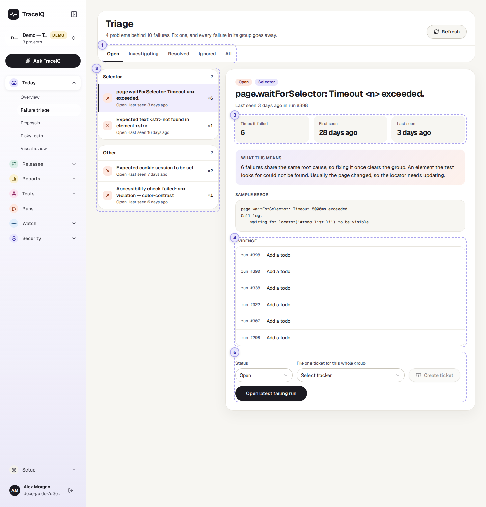
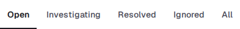
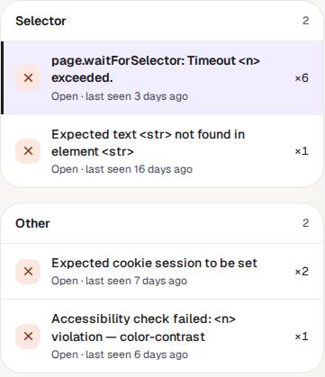
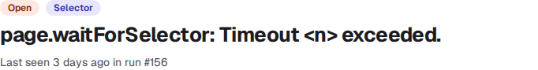
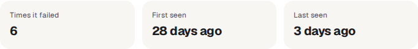
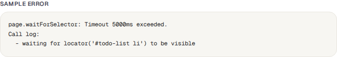
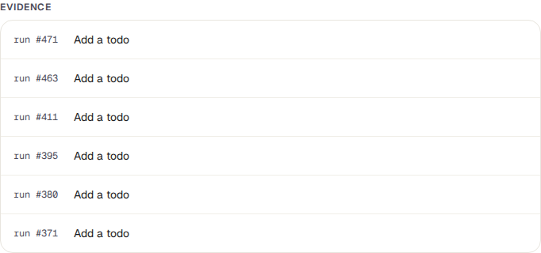
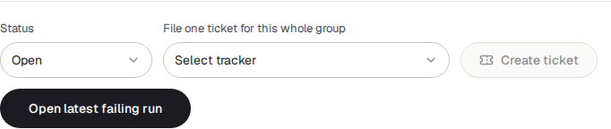

Failure triage
When tests fail, TraceIQ puts failures with the same cause into one group. Instead of reading twenty failed runs, you look at the three or four problems behind them, fix each one once, and mark it as dealt with.
What it is for
Failure triage answers "What is actually broken, and what should I look at first?" One broken button can fail the same test every night for a week, or fail ten different tests in one run. On the run pages that looks like many failures. On this page it is one problem, with a count of how many times it happened.
Testers
Start the day with the biggest problem, not the most recent failure. Decide whether it's the app or the test that needs fixing.
Developers
See the exact error message and every test it broke, then open a run to look at the screenshots and logs.
Leads
Know how many separate problems there are and who is working on them, and file one ticket per problem instead of one per failure.
Where to find it: in the sidebar, open Today → Failure triage. The page's own heading says Triage.
A tour of the screen
The page shows the project selected at the top of the sidebar. The list of problems is on the left; the one you pick is shown in detail on the right. The numbers on the screenshot match the sections below.

The line under the heading sums it up, for example "4 problems behind 10 failures": four separate causes, which between them made tests fail ten times. It counts only the problems on the tab you are looking at.
The status tabs

Every problem has a status, and the tabs show one status at a time. Open is selected when the page opens, because those are the problems nobody has dealt with yet.
| Status | What it means |
|---|---|
| Open | New, and nobody has looked at it yet. Every new problem starts here. |
| Investigating | Someone is working out the cause or fixing it. |
| Resolved | Fixed. TraceIQ notes the time, which the reports use to show how quickly problems get fixed. If it fails again later, TraceIQ moves it back to Open by itself. |
| Ignored | Known and accepted, for now. It no longer shows under Open, and stays Ignored even when it fails again (its count keeps going up). |
| All | Every problem, whatever its status. |
The list of problems

Problems are boxed by kind (see the table below). The box with the most failures comes first, and inside a box the most frequent problem comes first. The small number next to a box's name is how many problems it holds.
- The name of a problem is its error message (the first line).
- Underneath: its status, and how long ago it last happened.
- ×6 on the right means it has made a test fail six times so far.
- The icon on the left is a cross for Open and Investigating, a tick for Resolved, and a dash for Ignored.
- Click a problem to show it on the right. Until you do, the most frequent one is shown.
Two failures belong together when their error messages say the same thing. Details that change from one failure to the next, such as a number of seconds or an ID, would keep them apart, so TraceIQ swaps those details for a placeholder before comparing:
<n>= a number, e.g. "5000ms" or "502"<str>= text in quotes, e.g. a button's label or a page element<url>= a web address,<path>= a file path,<uuid>and<hex>= IDs
So "Expected status 200 but got 502" and "Expected status 200 but got 503" are one problem: Expected status <n> but got <n>. The full message, with the real values, is under Sample error.
| Kind | What it usually means |
|---|---|
| Selector | Something the test looks for on the page could not be found, or did not appear in time. Usually the page changed, so the test needs updating. |
| Assertion | The page loaded but showed something different from what the test expected. The kind most likely to be a real bug. |
| Timeout | Something took longer than the test was willing to wait. Check for a slow server or a problem with the test environment before blaming the test. |
| Network | A request failed, got an error status (such as 502), or got no answer. Often the environment, not the code. |
| Navigation | The browser could not open or finish loading a page. |
| Other | Failures with the same message that don't fit any of the kinds above. |
TraceIQ picks the kind from words in the error message, checking for Selector first, then Assertion, Timeout, Network and Navigation. A test that timed out while waiting for a button is therefore a Selector problem, not a Timeout. And "Expected text … not found in element …" is a Selector problem too, even when the element was there with the wrong text. Read the error before deciding who should fix it.
The selected problem

At the top: the problem's status and kind, its name, and the last run it happened in. Then three facts:

| Fact | What it tells you |
|---|---|
| Times it failed | How many test results this problem has caused, since it first appeared. Ten tests failing in one run count as ten. |
| First seen | When it happened for the first time. A problem first seen today is probably caused by something that changed today. |
| Last seen | When it happened most recently. If that was weeks ago, it may already be fixed. |
What this means repeats, in plain words, what this kind of problem usually comes down to (the same explanations as the table above).
Sample error is the complete message from the first failure in the group, with the real numbers and text in place of the placeholders. It is often more than one line: Playwright adds a "Call log" saying exactly what it was waiting for.

Evidence

One row per failure in the group, newest first: the run it happened in, and the name of the test that failed. Click a row to open that run, with its screenshots, step-by-step results and logs. The list shows up to the 50 newest failures; Times it failed counts all of them.
If every row names the same test, one test keeps failing in the same way. If the rows name many different tests, one cause (often a shared page or a server problem) is breaking all of them.
Status and ticket

- Status moves the problem to Open, Investigating, Resolved or Ignored. The change is saved straight away, and the problem leaves the tab you are on and appears under its new status.
- File one ticket for this whole group: choose an issue tracker (Jira, GitHub or iTop), then press Create ticket. TraceIQ files one ticket for the whole problem, titled "[TraceIQ] kind: problem name", with the number of failures, the sample error, and the screenshots, video and trace of the latest failing run (whatever that run recorded). The ticket is created in the background; you'll see "Ticket queued for this cluster".
- Open latest failing run takes you to the newest run where the problem happened.
The list shows the issue trackers set up in Setup → Issue trackers for the workspace this project belongs to, and switched on. Linear connections are missing on purpose: TraceIQ only imports from Linear and can't create tickets there.
Watch it in use
How to…
…work through today's failures
- Make sure the right project is selected at the top of the sidebar.
- Stay on the Open tab. The problem at the top of the first box is the one that has failed most often.
- Read its Sample error, then click a row under Evidence to see the screenshots of that run.
- Set the status to Investigating, so colleagues can see someone is on it.
- Once it is fixed, set it to Resolved. Then move on to the next problem.
…hand a problem to the development team
- Click the problem in the list.
- Under File one ticket for this whole group, choose your tracker.
- Press Create ticket. One ticket covers every failure in the group, so the team isn't sent the same bug many times.
- Set the status to Investigating.
…check whether a fixed problem has come back
- You don't need to look: when a Resolved problem fails again, TraceIQ moves it back to the Open tab.
- On the Open tab, a problem whose First seen is long ago but Last seen is recent has usually come back after a fix. Its count includes the failures from before the fix too.
- Set it to Investigating and look at what changed since it was fixed.
Good to know
- A resolved problem reopens by itself. If the same failure happens again, it is added to the existing problem and moved back to Open. Ignored and Investigating problems keep their status; only their count and last seen change.
- Grouping happens when a run finishes. Every test that ended Failed or Error is added to a group. Tests that were Cancelled or Timed out are not; nor are the check runs TraceIQ makes for a suggested fix (see Proposals).
- The test's name doesn't matter, only the message. Different tests that fail with the same message share one problem. The same test failing with two different messages makes two problems.
- One project at a time. Problems belong to a project. Switch project at the top of the sidebar to see another one's.
- It doesn't update by itself. Press Refresh (top right) to fetch new failures. The page also refreshes when you come back to its browser tab.
- Who can do what. Anyone with access to the project can look. Changing a status or filing a ticket needs the editor role; others see "Editor role required".
- Your clicks feed the reports. The first time a problem is set to Investigating or Resolved counts as "diagnosed" in the Value report, and the time it is resolved is used to measure how quickly problems get fixed.
Related pages
Runs
Each run's full result: every step, screenshot, video and log, plus AI analysis of what went wrong.
Proposals
The next page in this guide: fixes TraceIQ suggests for broken tests, such as a new way to find a button that moved.
Flaky tests
Tests that pass and fail without anything changing. They also show up here when they fail, so check there first.
Issue trackers
Connect Jira, GitHub or iTop so you can file tickets from this page.